There are some cities you visit and some cities you slow down for. Kyoto, we learned over three slow, rain-soft, matcha-soaked days, very firmly belongs to the second list. This is the diary of our fifth anniversary, a lost bus pass at the Golden Temple, two near-religious bowls of vegetarian chilli ramen, and a tiny matcha town that quietly became one of our favourite memories from Japan.
Day 1: 22nd April
Arrival & the Uji Matcha Trip
Kyoto Station at 5:30 a.m. has the cool, unhurried hush of a city that has been awake for centuries. We dragged our cases and one over-loved backpack onto the metro and were ringing the bell at Kiori Exec by 6:30 a.m. — the kind of timing that earns a polite, faintly amused bow from a hotel receptionist. Check-in wasn't until much later, but the staff promised to flag us the moment a room came free.
For us, walking into that lobby felt like turning a page. The shared-room, shared-bathroom, hostel-budget chapter of Japan was officially behind us. From here on: our own door, our own kettle, our own quiet.
The day's plan was simple — Uji, the matcha town nearly an hour from Kyoto. But nothing opened before 9:30 a.m., and our temple-tank was still full from Senso-ji in Tokyo. So I did the one thing I'm consistently brilliant at when tired: I sketched out a Uji walking map on my phone, then promptly fell asleep on a lobby sofa.
☕ Kyoto Hotel Tip — Kiori Exec
Arriving at sunrise? Kiori Exec's lobby is comfortable enough to nap in, the staff are unusually kind to early arrivals, and they actually do bump you into a room early if one's clean. Worth the small premium over a hostel after a long Shinkansen day.
The room came through at 10 a.m. We crashed again, properly this time. By the time we surfaced and made it to Uji, it was 4:30 p.m. — a late, late start. We'd starred a long list of matcha shops on Google Maps and got to exactly two; most close at 5:30 or 6 p.m. Two was enough to fall completely in love.
Our first proper matcha parfait — thick whisked matcha layered with adzuki beans, soft jelly, soft-serve, and one ceremoniously placed dango. Matcha tea served the right way: bitter, grassy, alive. Matcha candies that somehow taste like the leaf itself. We stocked up for home — tea, latte powder, candies, even matcha soba noodles. Matcha is one of those flavours that grows on you with every sip, every spoonful, until ordinary green tea feels like a faint photocopy.
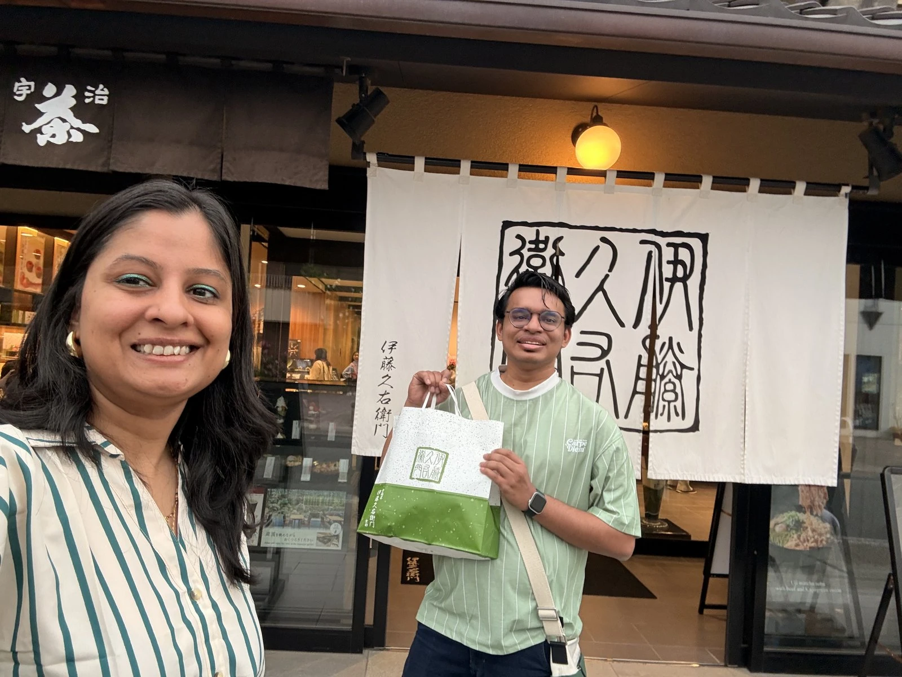
With the shutters down, we did what Uji rewards most: we wandered. The river. Uji Shrine in its early-evening quiet. A neighbourhood supermarket that doubled as a small adventure. The bronze statues from The Tale of Genji, standing where one of the world's oldest novels was set a thousand years ago.
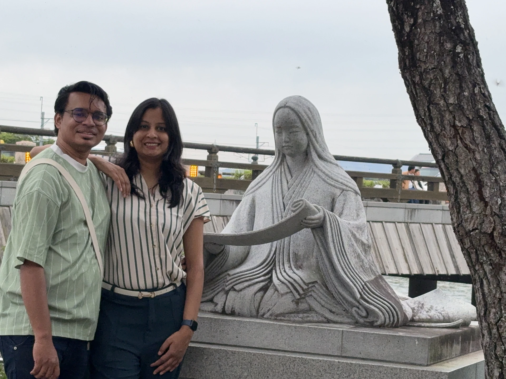
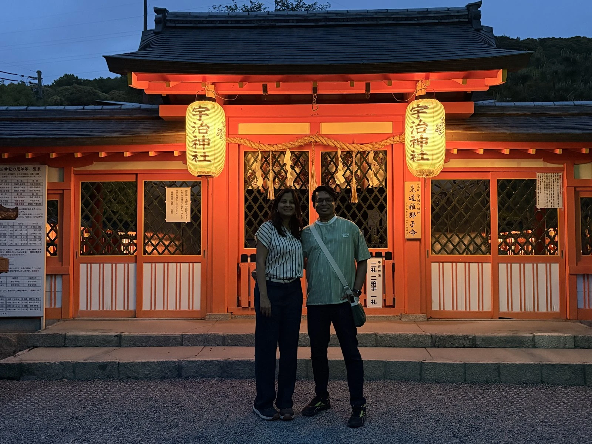
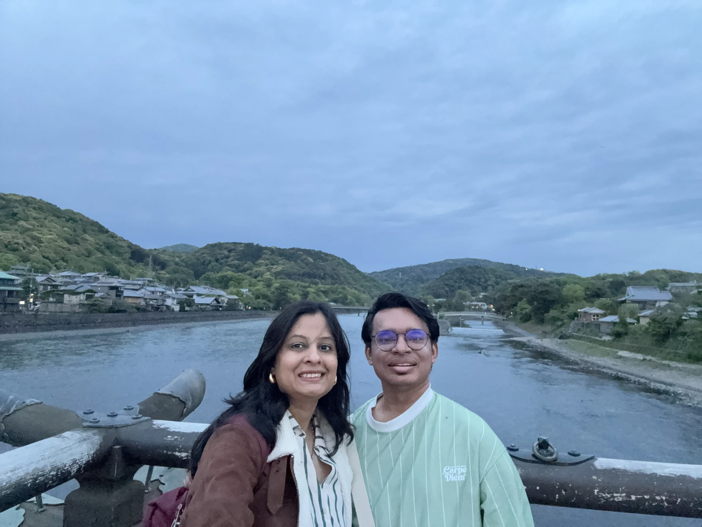
By 8 p.m. we were back in Kyoto and inside Vegan Izakaya, where the staff first told us — kindly, regretfully — that they were fully booked. One soft please from us, a soft pause from them, and a small table appeared.
Their gyoza turned out to be the best of our entire Japan trip — thin-skinned, crisp-bottomed, herby and juicy in the middle. The sake landed on legs that had nothing left in them. We walked back to the hotel anyway, the way you do when you're happy and a little drunk and the city is too pretty to call a cab.
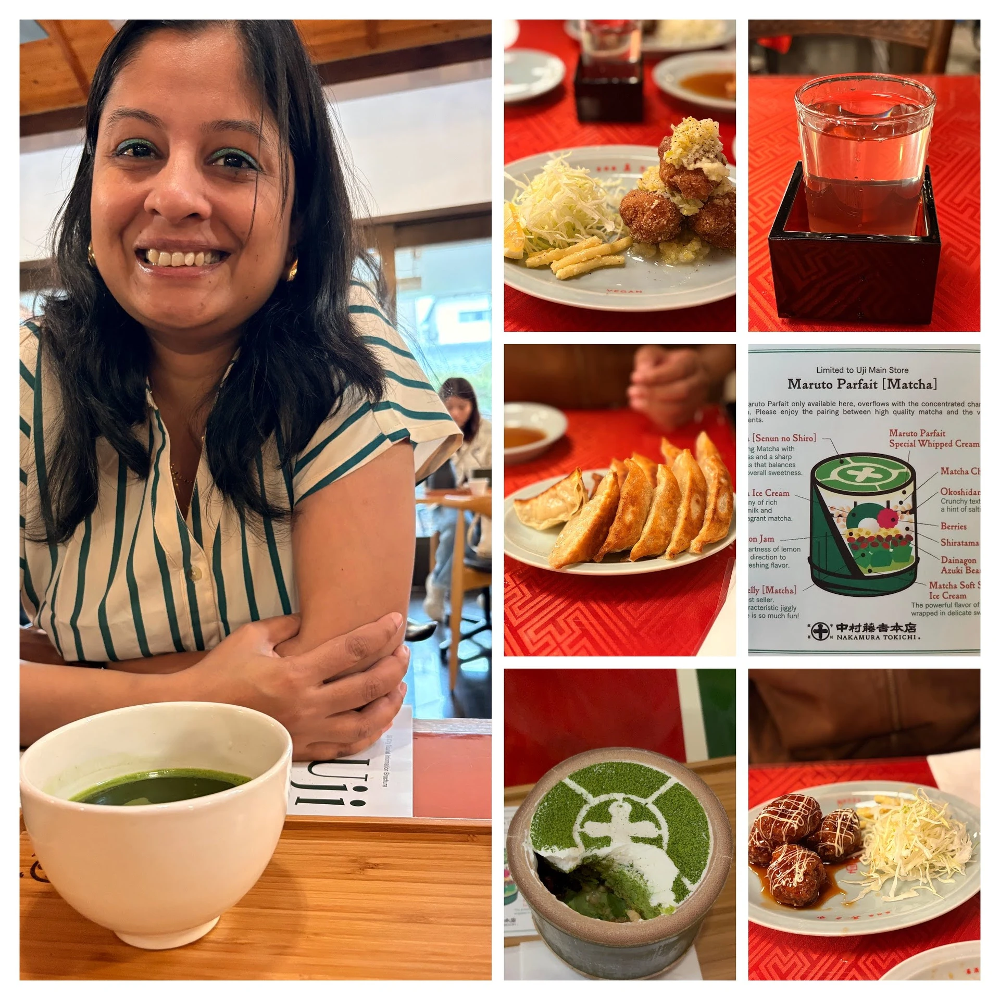
Before sleep, a small piece of admin. Suica was costing us 320 yen per ride, and tomorrow's big day would have at least four bus hops on it. I switched us to a Day Bus Pass — break-even at four rides, profit at five. Map sorted. Lights out.
Five years… half a decade with Golu. It still feels new, it still feels fresh, and it still is a very happy place. He makes it.
Day 2: 23rd April
Our Anniversary, in the Rain
Five years. I still can't believe half a decade has passed with Golu. It feels new, it still feels fresh, and it is — quietly, daily — a very happy place. He makes it.
People will tell you the spark fades, that you grow used to each other. I disagree. He still irritates me. I am still completely incapable of his cleanliness and his discipline, and he is somehow the steady ground to my live-wire chaos. We've been to many countries together, made highs and blunders along the way; as long as we're together, I have the energy to make any of it right. No matter how the world chooses to see me, he has seen the worst of me and still chooses to stay. That is luck, and I do not take it lightly.
We pulled on the new clothes we'd been saving for the day and picked up our transport tickets. The famous Kyoto breeze did a polite warm-up — and the moment we stepped outside, the sky opened. Two hotel-borrowed umbrellas held the entire day together; it rained hard.
First stop: Kiyomizu-dera, perched on its wooden stilts over a hillside of cedar and maple. The Japanese way of building a temple is so different from what we grew up around in India — quieter, more orderly, almost shy in its grandeur. Below the temple, the two iconic streets — Sannenzaka and Ninenzaka — twist downhill in old wood and stone. We tried local sweets, ate a warm apple pie, ducked into a Starbucks (yes — and even Starbucks here is different, with low Japanese-style floor seating). Coffees down, we plotted the next move. Kinkaku-ji, the Golden Temple, won the vote.
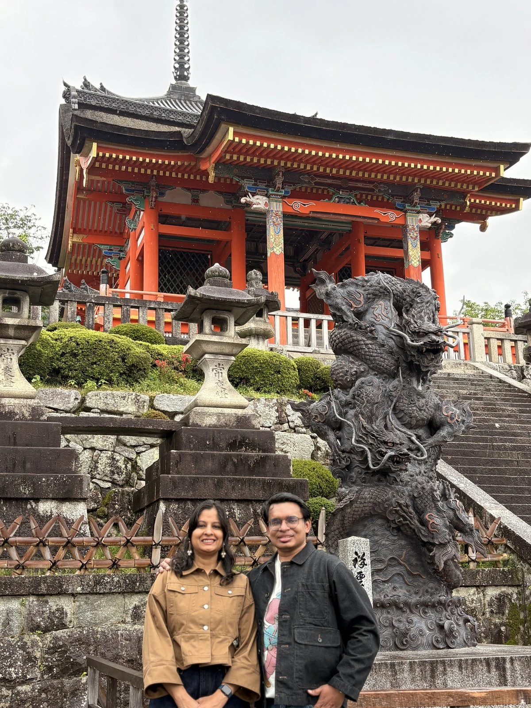
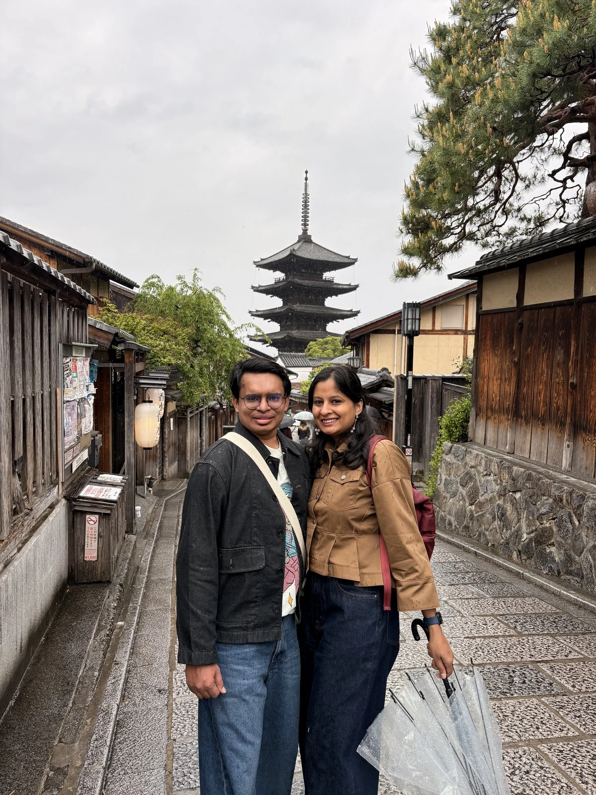
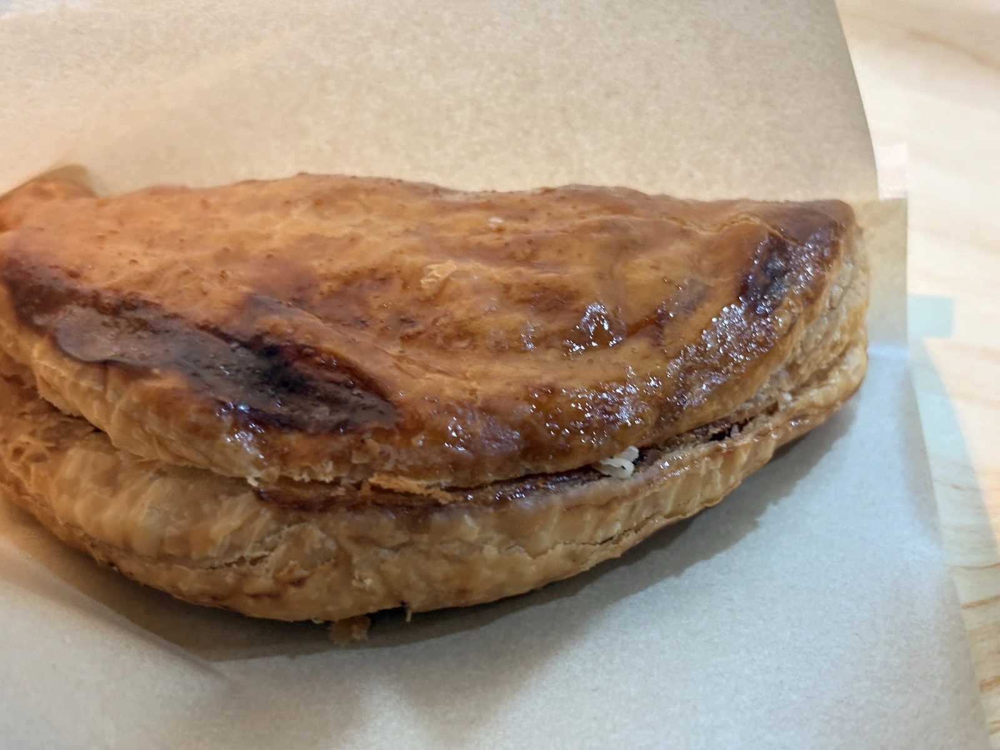
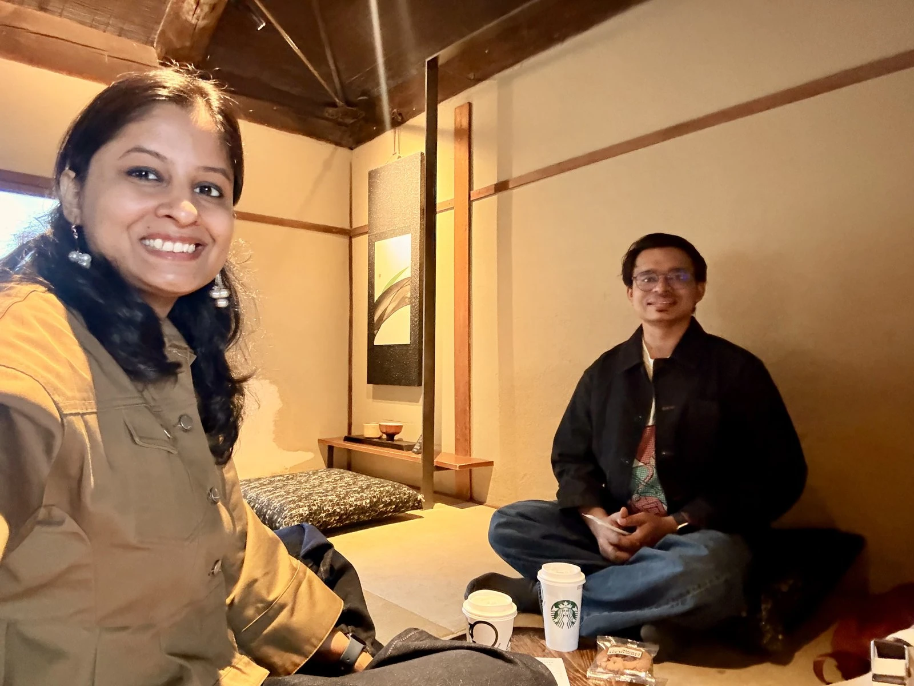
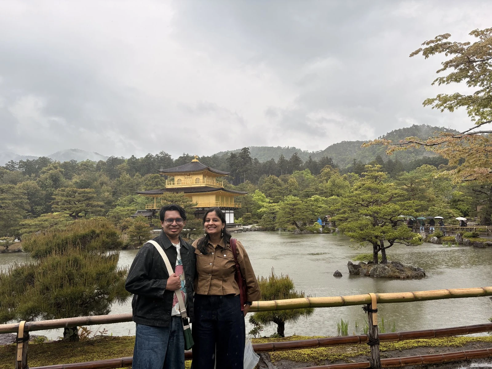
I was lost in the gold for a full minute before I realised I'd lost my day bus pass. You can't go back out through the entrance at Kinkaku-ji once you're in, but a kind guard checked anyway. Nothing. I felt awful. And then Harshit's classic patient positivity stepped in — we'd already gotten three rides out of it, we were fine. Even writing this now, it still nags at me a little. But it is okay, as long as we're together 😛.
☔ Kyoto in the Rain — Our Cheat Sheet
- Borrow umbrellas from your hotel — almost every Kyoto hotel keeps a stand by the door.
- Covered markets are everything. Nishiki, Shinkyogoku, Teramachi — hours of strolling without a drop on you.
- Temples are better in the rain. Fewer crowds, softer light, glossier roofs. Kinkaku-ji especially.
- Skip the kimono day if it's raining hard — they pull beautifully, but not in puddles.
Kyoto's covered markets are an underrated travel hack. The rain literally doesn't touch you; you drift from shop to shop for hours. We did a full sweep of 3 Coins — hairbrush, foldable chair, the works — and then a two-floor bookstore inside a mall that quietly knocked the wind out of me. The reading culture in Japan is real; the love for their own language even more so. Across both floors, exactly one shelf held English translations. Every time I walk into a bookstore I feel quietly small — there is just so much left to read.
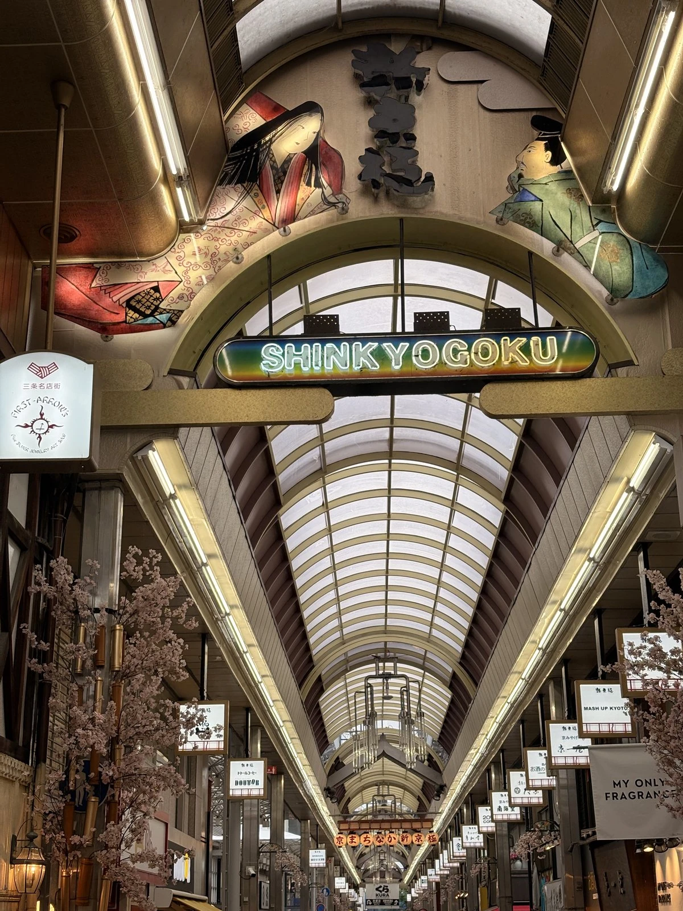
The rain finally ruled out Fushimi Inari for the day. We circled back to the market, and that's when I spotted — half by accident, half by destiny — an Indian restaurant. On a rainy anniversary, the heart wants comfort food. Delhi Restaurant, Kyoto: chole bhature, onion parantha, run by a Dehradun-wala for the last 20 years. I would not have planned this anniversary any differently than to watch the look on Harshit's face after a plate of Indian food on the other side of the world.
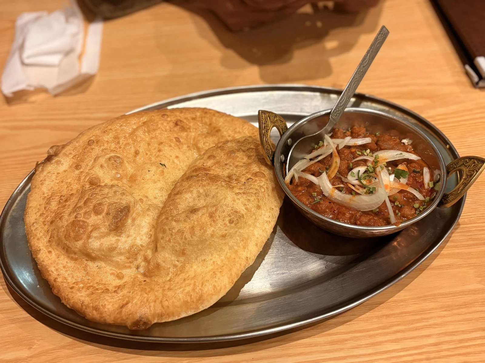
I have a thousand things racing through my head at any moment; he is calm and sweet, and his quietest joy still lives in food that tastes like home. I feel lucky to come from a populated ethnicity — his comfort, I can find for him almost anywhere in the world 😀.
I would not have planned this anniversary any differently than to watch the look on Harshit's face after a plate of chole bhature on the other side of the world.
Day 3: 24th April
Torii Gates, Ramen, & the Long Walk Home
The famous Fushimi Inari day, and our last in Kyoto. We've been slow-paced this entire trip and today's wake-up made no apologies for it: brunch at noon. We chose Ain Soph Kyoto — we'd already fallen for Ain Soph Ginza in Tokyo and this branch held the line beautifully. Then, because matcha had us in its grip, we walked to MACCHA HOUSE (抹茶館) for a parfait. Wow. Simply wow. We added the seasonal matcha-strawberry-sakura latte and that, too, was outstanding — bright, faintly floral, the strawberry doing exactly enough.
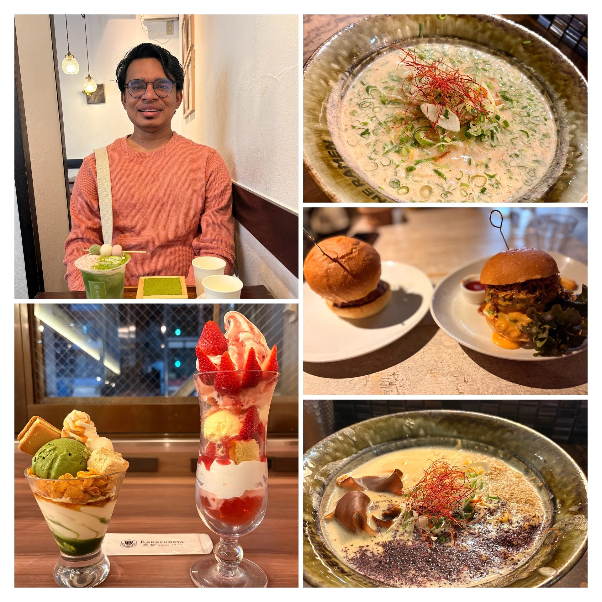
Heavy brunch behind us, Golu was set on the hike. We had talked about doing the traditional kimono rental — I'd originally planned it for the anniversary; the rain killed that — and decided, with very little debate, that the money was better spent on a second matcha parfait 😛.
We reached Fushimi Inari Taisha at 1:15 p.m. and started up. Walking through those endless vermilion Torii gates hits in a way you can't quite put into words. You don't need to read the kanji on each one for the place to get under your skin. We climbed to a clearing where the city opens up beneath you. On the way down I outpaced Harshit, who got mildly annoyed by my speed. He was back to normal by the time we reached the foot of the mountain. More photos, more watching strangers pray, more watching them tie wishes onto small wooden boards.
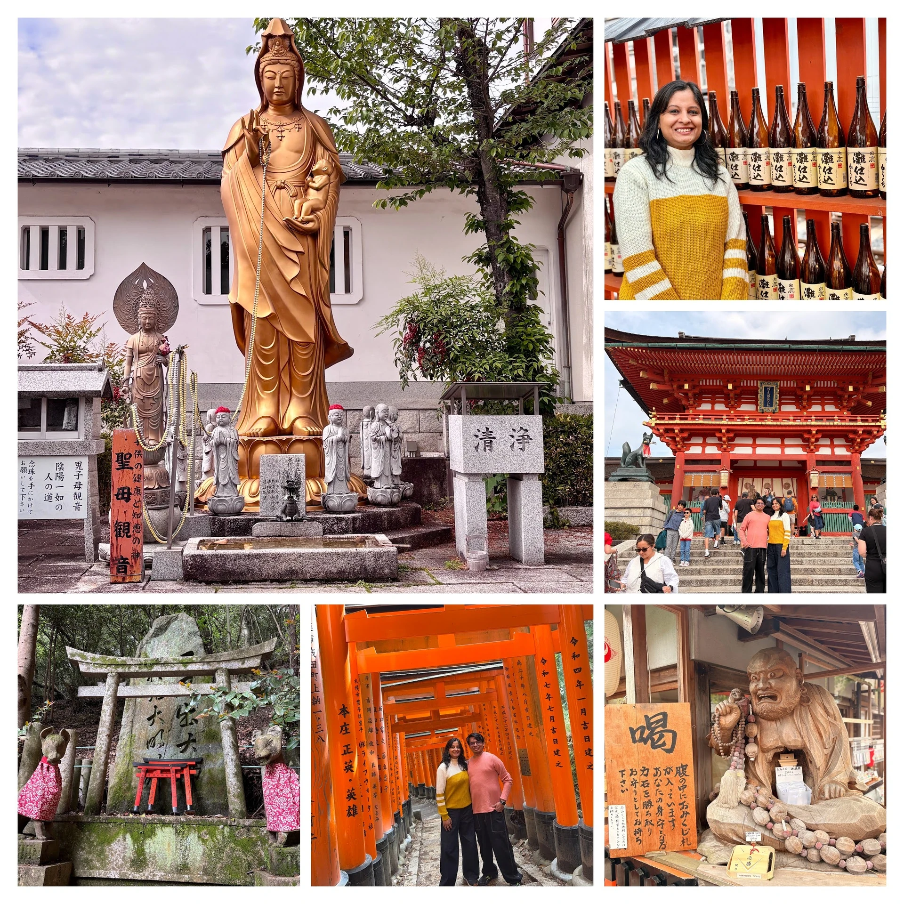
The market around Fushimi Inari is mostly non-veg, so we headed back to central Kyoto for round two of shopping: skincare. After enough late-night research, I'd locked in on OS Drugstore as the best price-point store, with Matsumoto Kiyoshi as the comparison. We bounced between the two for the best deals — plus Japanese gums, plus jellies, plus too many labels in too many translations.
🧴 Kyoto Skincare Shopping — How We Saved
- Compare 2 stores minimum. Same product can differ 20–30% between OS Drugstore and Matsumoto Kiyoshi a block apart.
- OS Drugstore tends to win on serums & lotions; Matsumoto Kiyoshi wins on sheet masks & sunscreens.
- Carry your passport — both chains offer tax-free over ¥5,000.
- Snack aisle = souvenir gold. Konjac jellies, melon gums, sakura KitKats. Don't be us — buy the 14-flavour pack.
Dinner was the very famous Kyoto Engine. One absolute MUST EAT. We finished two bowls of ramen in no time. The best ramen we have ever had — full stop. I crave it just writing this. Who would have imagined the highlight of a Japanese trip would be a vegetarian chilli ramen? Naturally a parfait followed for dessert; Kyoto Engine had what felt like a thousand varieties on the display board. With so much sugar in our blood and rain in our shoes, we walked back to the hotel to enjoy our last Kyoto night. Then came the pack: route to Osaka figured out, two suitcases and a fully-packed backpack lined up by the door.
Kyoto teaches you to slow down — not because you have to, but because the city refuses to be rushed. Even the rain in Kyoto walks.
Where It All Happened
Three days, one ancient capital, a lot of rain and a lot of matcha. Pan the map, click a pin — each one is a moment above.
Must-Do in Kyoto
- Uji Matcha Town: Go early — most shops shut by 6 p.m.
- Kiyomizu-dera & Sannenzaka: Best in the soft morning light.
- Kinkaku-ji: Even better in the rain.
- Fushimi Inari Hike: Walk at least to the first viewpoint.
- Vegan Izakaya: The gyoza — don't miss it.
- Kyoto Engine Ramen: The best veg ramen we've ever had.
- Covered Market Strolling: Rain or shine, a delight.
- Day Bus Pass: Worth it from 4+ rides — don't lose it.
Join the conversation
Have a question, a tip, or a memory from the same place? Drop a comment below — no signup needed.